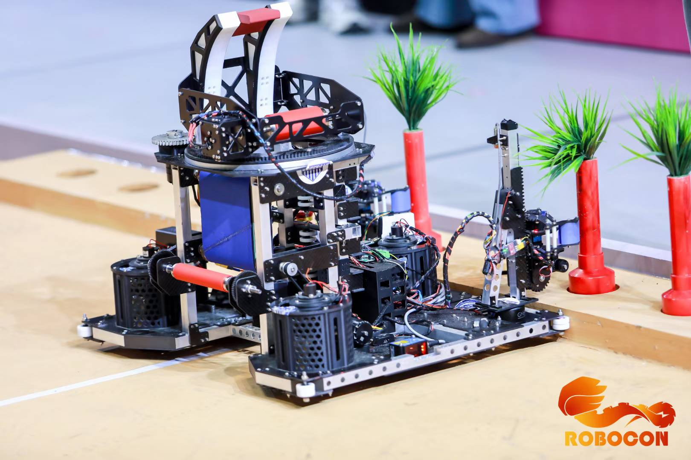
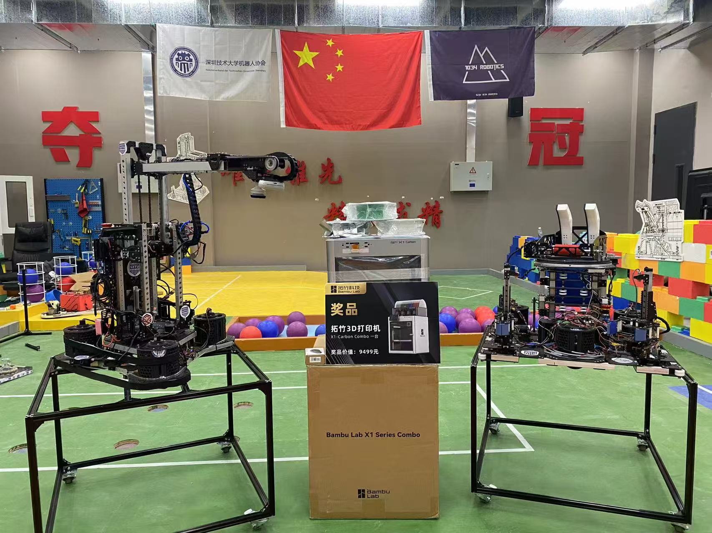

💡 单击图片查看完整图片
夹苗射球机器人，用于参加全国大学生机器人大赛ROBOCON。此机器人具备双升降夹爪精准夹取稻苗、摩擦轮机构稳定发射球体以及全向舵轮底盘灵活移动的能力。该项目最终荣获全国一等奖。
在该项目中，本人作为电控组核心成员，主要负责机器人的定位算法与运动控制系统开发。
通过多传感器融合定位技术与先进的路径规划算法，机器人在比赛中实现了稳定、精准的半自动运行。系统的高实时性与控制柔顺性确保了机器人能够在高速运动中保持精确定位，为任务执行提供了可靠保障。
机器人在比赛中精准地完成了所有规定任务，在半自动运行环节获得满分，最终荣获全国一等奖。该项目充分验证了定位算法与运动控制系统的先进性与可靠性。